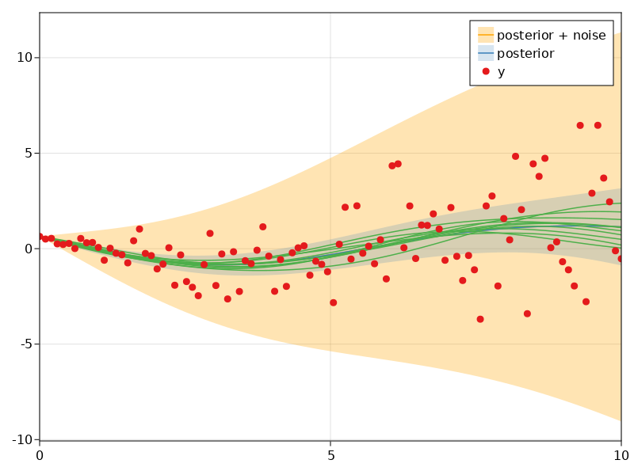

Parameteric Heteroscedsatic Model

You are seeing the HTML output generated by Documenter.jl and Literate.jl from the Julia source file. The corresponding notebook can be viewed in nbviewer.
This example is a small extension of the standard GP regression problem, in which the observation noise variance is a function of the input. It is assumed to be a simple quadratic form, with a single unknown scaling parameter, in addition to the usual lengthscale and variance parameters of the GP. A point estimate of the parameters are obtained using type-II maximum likelihood, as per usual.
using AbstractGPs
using AbstractGPsMakie
using CairoMakie
using KernelFunctions
using LinearAlgebra
using Literate
using Optim
using ParameterHandling
using Random
using ZygoteSpecify simple GP.
build_gp(θ) = GP(0, θ.s * with_lengthscale(SEKernel(), θ.l));Observation variance is some scaling of x^2.
observation_variance(θ, x::AbstractVector{<:Real}) = Diagonal(θ.σ² .* x .^ 2);Specify hyperparameters.
flat_init_params, unflatten = ParameterHandling.value_flatten((
s=positive(1.0), l=positive(3.0), σ²=positive(0.1)
));
θ_init = unflatten(flat_init_params);Build inputs:
const x = range(0.0, 10.0; length=100);
const y = rand(Xoshiro(123456), build_gp(θ_init)(x, observation_variance(θ_init, x)));Specify objective function:
function objective(θ)
f = build_gp(θ)
Σ = observation_variance(θ, x)
return -logpdf(f(x, Σ), y)
end;Optimise the hyperparameters. They've been initialised near the correct values, so they ought not to deviate too far.
result = optimize(
objective ∘ unflatten,
θ -> only(Zygote.gradient(objective ∘ unflatten, θ)),
flat_init_params + 0.01 * randn(Xoshiro(123456), length(flat_init_params)),
LBFGS(;
alphaguess=Optim.LineSearches.InitialStatic(; scaled=true),
linesearch=Optim.LineSearches.BackTracking(),
),
Optim.Options(; iterations=4_000);
inplace=false,
);
θ_final = unflatten(result.minimizer);Construct the posterior GP with the optimal model parameters:
Σ_obs_final = observation_variance(θ_final, x);
fx_final = build_gp(θ_final)(x, Σ_obs_final);
f_post = posterior(fx_final, y);Plot the results, making use of AbstractGPsMakie:
using CairoMakie.Makie.ColorSchemes: Set1_4
set_theme!(
palette=(color=Set1_4,),
patchcolor=(Set1_4[2], 0.2),
Axis=(limits=((0, 10), nothing),),
)
#! format: onn
let
fig = Figure()
ax = Axis(fig[1, 1])
plot!(ax, x, f_post(x, Σ_obs_final); bandscale=3, label="posterior + noise", color=(:orange, 0.3))
plot!(ax, x, f_post(x, 1e-9); bandscale=3, label="posterior")
gpsample!(ax, x, f_post(x, 1e-9); samples=10, color=Set1_4[3])
scatter!(ax, x, y; label="y")
axislegend(ax)
fig
end
This page was generated using Literate.jl.